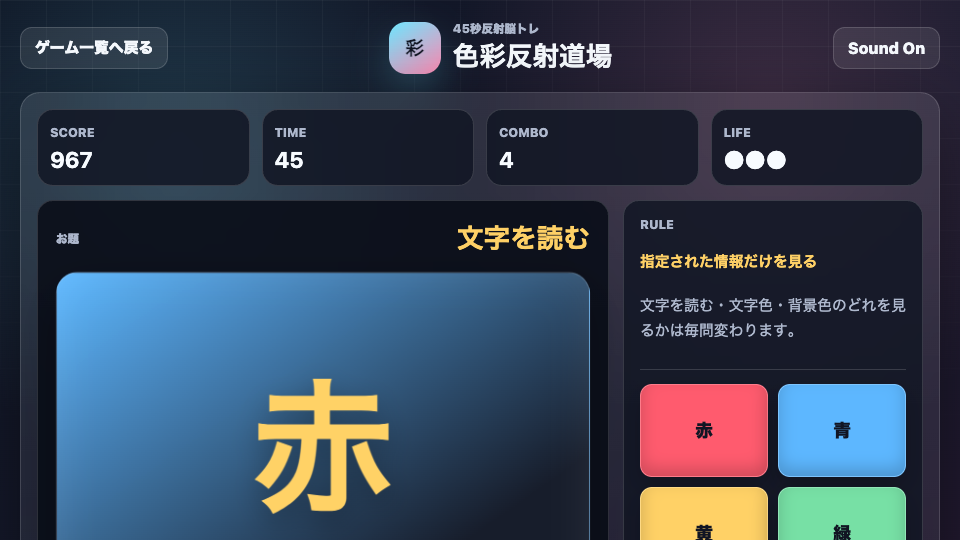
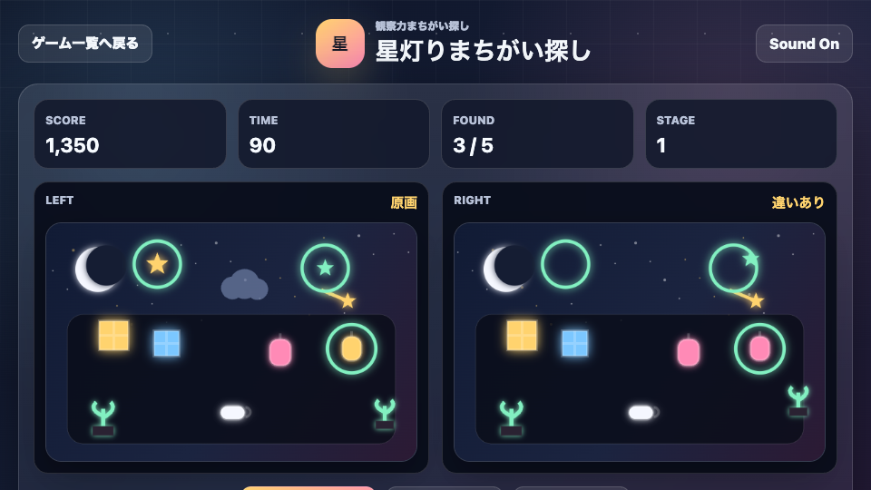
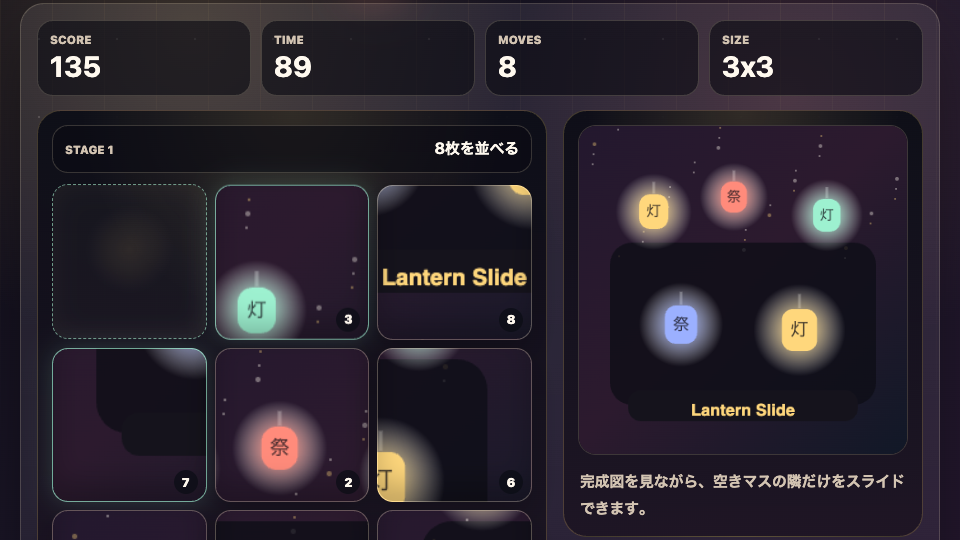

終電ナンバーサーチ
数字を1から順番に探す45秒脳トレ。
遊ぶ初めての人でも遊びやすい、短時間でスコア更新を狙える無料ブラウザゲームです。
数字を1から順番に探す45秒脳トレ。
遊ぶ
色と文字を瞬時に見分ける反射脳トレ。
遊ぶ
左右の違いを探す観察力パズル。
遊ぶ最近追加した無料ブラウザゲームです。新しい入口ページにもつながるように、詳細ページを用意しています。
宇宙回転寿司で皿を増やす1分クリッカー。
遊ぶ
駅の発車標をテーマにした数字タップゲーム。
遊ぶ
夜祭りの絵柄を完成させるスライドパズル。
遊ぶ短時間で遊びやすい、初見でも分かりやすい、スマホ・PCで始めやすい、という編集基準で選んでいます。
無料ブラウザゲーム広場では、スマホで遊べる無料ゲーム、PC スマホ ブラウザゲーム、短時間で遊べるミニゲームを目的別に探せます。休み時間やスキマ時間のリフレッシュに向いた暇つぶしゲームも、各カテゴリからクロール可能なリンクで移動できます。
各ゲームの遊び方、操作方法、攻略のコツは個別ページで確認できます。